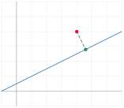
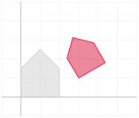
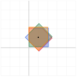
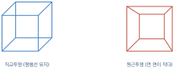
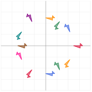
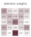

선형대수의 응용
이 장을 마치면
이 책의 마지막 장이다. 지금까지 우리는 벡터와 행렬을 정의하고, 연산을 익히고, 변환으로 보는 법을 배우고, 여러 방식으로 분해했다. 이제 그 도구들을 실제 문제에 꺼내 쓸 차례다.
이 장의 예제들은 서로 다른 분야에서 왔지만 공통점이 있다. 문제를 벡터와 행렬의 언어로 옮기는 순간 답이 보인다는 것이다. 그 번역 능력이야말로 선형대수를 배워 얻는 가장 큰 자산이다.
13.1 다양한 기하 문제 해법
직선과 평면을 벡터로 적기
고등학교에서 직선을 \(y = ax+b\)로 배웠다. 그런데 이 표현은 수직선(\(x=c\))을 나타낼 수 없다는 약점이 있다. 벡터로 적으면 그런 예외가 사라진다.
| 대상 | 매개변수 표현 | 방정식 표현 |
|---|---|---|
| 직선 (2D) | \(\vv{p} + t\vv{d}\) | \(\vv{n}\cdot(\vv{x}-\vv{p}) = 0\) |
| 직선 (3D) | \(\vv{p} + t\vv{d}\) | (두 평면의 교선) |
| 평면 (3D) | \(\vv{p} + s\vv{u} + t\vv{v}\) | \(\vv{n}\cdot(\vv{x}-\vv{p}) = 0\) |
여기서 \(\vv{d}\)는 방향벡터, \(\vv{n}\)은 법선벡터normal vector다. 방정식 표현 \(\vv{n}\cdot(\vv{x}-\vv{p})=0\)은 "\(\vv{p}\)에서 \(\vv{x}\)로 가는 벡터가 법선에 수직"이라는 뜻이며, 4장의 내적 하나로 모든 것이 정리된다.
점과 직선 사이의 거리
점 \(\vv{q}\)에서 직선 \(\vv{p}+t\vv{d}\)까지의 거리를 구해 보자. 4장의 정사영을 쓰면 된다. \(\vv{q}-\vv{p}\)를 \(\vv{d}\) 방향 성분과 수직 성분으로 나누면, 수직 성분의 길이가 곧 거리다.
import numpy as np
from tuvis import *
def point_line_distance(q, p, d):
"""점 q에서 직선 p + t*d 까지의 거리와 가장 가까운 점"""
d = d / np.linalg.norm(d)
w = q - p
t = w @ d # 정사영 계수
closest = p + t * d
return np.linalg.norm(q - closest), closest
p = np.array([1., 1.])
d = np.array([2., 1.])
q = np.array([4., 4.])
dist, foot = point_line_distance(q, p, d)
print('거리 :', round(dist, 6))
print('가장 가까운 점 :', np.round(foot, 6))
print('수직 확인 :', round((q - foot) @ d, 12))
fig, ax = new_axes(xlim=(-1, 7), ylim=(-1, 6))
ts = np.linspace(-1, 3, 50)
line = p + ts[:, None] * d
draw_curve(ax, line, color='steelblue', width=3)
draw_points(ax, q.reshape(1, 2), color='crimson', s=70)
draw_points(ax, foot.reshape(1, 2), color='seagreen', s=70)
draw_line(ax, q, foot, color='gray', linestyle='--')
fig.show()거리 : 1.341641 가장 가까운 점 : [4.6 2.8] 수직 확인 : 0.0
>!

점과 평면 사이의 거리
3차원에서 평면이 \(\vv{n}\cdot(\vv{x}-\vv{p})=0\)으로 주어졌다면 거리는 더 간단하다.
법선 방향으로의 정사영 길이가 그대로 거리이기 때문이다.
import numpy as np
def point_plane_distance(q, p, n):
return abs(n @ (q - p)) / np.linalg.norm(n)
# 세 점으로 평면 정의 -> 법선은 외적으로
A = np.array([1., 0., 0.])
B = np.array([0., 2., 0.])
C = np.array([0., 0., 3.])
n = np.cross(B - A, C - A)
q = np.array([2., 2., 2.])
print('법선 :', n)
print('거리 :', round(point_plane_distance(q, A, n), 6))
print('원점까지:', round(point_plane_distance(np.zeros(3), A, n), 6))법선 : [6. 3. 2.] 거리 : 2.285714 원점까지: 0.857143
두 직선의 교점
두 직선의 교점을 구하는 것은 연립방정식 문제다. 8장의 도구가 그대로 쓰인다.
import numpy as np
def line_intersection(p1, d1, p2, d2):
"""p1 + s d1 = p2 + t d2 를 푼다."""
A = np.column_stack([d1, -d2])
b = p2 - p1
if abs(np.linalg.det(A)) < 1e-12:
return None # 평행하거나 일치
s, t = np.linalg.solve(A, b)
return p1 + s * d1
print(line_intersection(np.array([0., 0.]), np.array([1., 1.]),
np.array([4., 0.]), np.array([-1., 1.])))
print(line_intersection(np.array([0., 0.]), np.array([1., 1.]),
np.array([1., 0.]), np.array([2., 2.]))) # 평행[2. 2.] None
행렬식이 0인지 확인하는 것이 곧 "평행한가"를 판정하는 일이다. 7장에서 배운 "행렬식이 0이면 차원이 무너진다"가 여기서는 "두 방향벡터가 같은 직선 위에 있다"로 나타난다.
삼각형의 넓이와 무게중심 좌표
컴퓨터 그래픽스에서 끊임없이 쓰이는 계산 두 가지를 보자. 삼각형의 넓이는 4장의 외적으로 구했다. 무게중심 좌표barycentric coordinates는 삼각형 안의 한 점을 세 꼭짓점의 가중평균으로 표현하는 방법이다.
\(\alpha, \beta, \gamma\)가 모두 0 이상이면 점이 삼각형 안에 있다. 텍스처 좌표나 색을 삼각형 내부에서 부드럽게 보간할 때 이 값을 그대로 가중치로 쓴다.
import numpy as np
import matplotlib.pyplot as plt
def barycentric(p, a, b, c):
"""점 p의 무게중심 좌표를 구한다."""
A = np.column_stack([b - a, c - a])
beta, gamma = np.linalg.solve(A, p - a)
return np.array([1 - beta - gamma, beta, gamma])
a, b, c = np.array([0., 0.]), np.array([4., 0.]), np.array([1., 3.])
for p in [np.array([1.5, 1.0]), np.array([3., 2.]), np.array([1., 1.])]:
w = barycentric(p, a, b, c)
inside = np.all(w >= -1e-12)
print(f'p={p} -> {np.round(w, 4)}, 내부={inside}')p=[1.5 1. ] -> [0.375 0.2917 0.3333], 내부=True p=[3. 2.] -> [-0.25 0.5833 0.6667], 내부=False p=[1. 1.] -> [0.5 0.1667 0.3333], 내부=True
무게중심 좌표를 색 보간에 써 보자. 세 꼭짓점에 각각 빨강, 초록, 파랑을 주고 내부를 채우면 부드러운 그러데이션이 만들어진다. 이것이 GPU가 매 프레임 수백만 번 수행하는 계산이다.
import numpy as np
import matplotlib.pyplot as plt
a, b, c = np.array([0.1, 0.1]), np.array([0.9, 0.2]), np.array([0.5, 0.9])
colors = np.array([[1., 0., 0.], [0., 1., 0.], [0., 0., 1.]])
n = 300
img = np.ones((n, n, 3))
ys, xs = np.mgrid[0:n, 0:n] / n
P = np.stack([xs, 1 - ys], axis=-1).reshape(-1, 2) # 모든 픽셀 좌표
M = np.column_stack([b - a, c - a])
bg = np.linalg.solve(M, (P - a).T).T # 한 번에 풀기
w = np.column_stack([1 - bg.sum(axis=1), bg])
inside = np.all(w >= 0, axis=1)
img.reshape(-1, 3)[inside] = w[inside] @ colors # 색 보간
plt.figure(figsize=(4.5, 4.5))
plt.imshow(np.clip(img, 0, 1), extent=[0, 1, 0, 1])
plt.xticks([]); plt.yticks([])
plt.show()np.linalg.solve(M, (P - a).T).T 한 줄이 9만 개 픽셀의 무게중심 좌표를 한꺼번에 계산한다. 반복문이 없다. 2장에서 배운 벡터화의 위력이 그래픽스 코드에서 이렇게 나타난다.
13.2 컴퓨터 그래픽스 분야에서의 활용
이동을 행렬로 만들 수 없다
7장에서 확인했듯 이동(translation)은 선형변환이 아니다. 원점이 움직이기 때문이다. 그런데 그래픽스에서는 회전·확대·이동을 자유롭게 조합해야 한다. 어떻게 해야 할까?
해법은 기발하다. 차원을 하나 늘리는 것이다. 2차원 점 \((x, y)\)를 3차원 벡터 \((x, y, 1)\)로 적으면, 이동이 행렬 곱으로 표현된다.
이 표현을 동차좌표homogeneous coordinates라 한다. 마지막 1이 이동량을 끌어와 주는 역할을 한다.
| 변환 | 2D 동차 행렬 | 설명 |
|---|---|---|
| 이동 | \(\begin{bmatrix}1&0&t_x\\0&1&t_y\\0&0&1\end{bmatrix}\) | \((t_x, t_y)\)만큼 옮김 |
| 회전 | \(\begin{bmatrix}\cos\theta&-\sin\theta&0\\\sin\theta&\cos\theta&0\\0&0&1\end{bmatrix}\) | 원점 기준 회전 |
| 확대 | \(\begin{bmatrix}s_x&0&0\\0&s_y&0\\0&0&1\end{bmatrix}\) | 원점 기준 확대 |
import numpy as np
from tuvis import *
def translate(tx, ty):
return np.array([[1., 0., tx], [0., 1., ty], [0., 0., 1.]])
def rotate(deg):
t = np.radians(deg)
return np.array([[np.cos(t), -np.sin(t), 0.],
[np.sin(t), np.cos(t), 0.],
[0., 0., 1.]])
def scale(sx, sy):
return np.array([[sx, 0., 0.], [0., sy, 0.], [0., 0., 1.]])
def apply(M, pts):
"""(N,2) 점들에 3x3 동차 행렬을 적용한다."""
P = np.column_stack([pts, np.ones(len(pts))]) # (N,3)
Q = (M @ P.T).T
return Q[:, :2] / Q[:, 2:3] # 마지막 성분으로 나눔
house = np.array([[0., 0.], [2., 0.], [2., 1.5], [1., 2.5], [0., 1.5]])
M = translate(3, 1) @ rotate(30) @ scale(0.8, 0.8) # 오른쪽부터 적용
fig, ax = new_axes(xlim=(-1, 6), ylim=(-1, 5))
draw_polygon(ax, house, color='lightgray', alpha=0.5)
draw_polygon(ax, apply(M, house), color='crimson', alpha=0.5)
fig.show()
print('합성 행렬 :\n', np.round(M, 4))>!

변환의 순서가 결과를 바꾼다. translate(3,1) @ rotate(30)은 "회전한 뒤 이동"이고 rotate(30) @ translate(3,1)은 "이동한 뒤 회전"이다. 후자는 물체가 원점에서 멀어진 채로 회전하므로 큰 원호를 그리며 날아간다. 5장에서 배운 "오른쪽부터 적용"을 여기서도 기억해야 한다.
제자리 회전 — 세 변환의 합성
물체를 자기 중심에서 회전시키려면 어떻게 할까? 회전행렬은 언제나 원점을 기준으로 하므로, 중심을 원점으로 옮기고 \(\to\) 회전하고 \(\to\) 되돌리는 세 단계가 필요하다.
이 패턴은 그래픽스에서 끝없이 반복된다. 10장의 닮음변환 \(\mm{P}\inv\mm{A}\mm{P}\)와 구조가 같다는 점도 눈여겨보자. "좌표계를 옮기고, 일을 하고, 되돌린다"는 발상은 선형대수 전체를 관통한다.
import numpy as np
from tuvis import *
house = np.array([[0., 0.], [2., 0.], [2., 1.5], [1., 2.5], [0., 1.5]])
center = house.mean(axis=0)
fig, ax = new_axes(xlim=(-3, 5), ylim=(-3, 5), figsize=(5.5, 5.5))
draw_polygon(ax, house, color='lightgray', alpha=0.6)
for deg, col in zip([45, 90, 135, 180], PALETTE):
M = (translate(*center) @ rotate(deg) @ translate(*(-center)))
draw_polygon(ax, apply(M, house), color=col, alpha=0.3)
draw_points(ax, center.reshape(1, 2), color='black', s=40)
fig.show()>!

3차원 회전과 투영
3차원에서는 동차좌표가 \(4\times4\) 행렬이 된다. 각 축에 대한 회전행렬은 다음과 같다(동차 성분은 생략하고 \(3\times3\)만 적었다).
3차원 물체를 2차원 화면에 그리려면 투영이 필요하다. 가장 단순한 것은 \(z\) 성분을 버리는 직교투영orthographic projection이고, 원근감을 주려면 거리에 따라 나누는 원근투영perspective projection을 쓴다.
import numpy as np
import matplotlib.pyplot as plt
def rot3(axis, deg):
t = np.radians(deg)
c, s = np.cos(t), np.sin(t)
if axis == 'x':
return np.array([[1, 0, 0], [0, c, -s], [0, s, c]])
if axis == 'y':
return np.array([[c, 0, s], [0, 1, 0], [-s, 0, c]])
return np.array([[c, -s, 0], [s, c, 0], [0, 0, 1]])
# 정육면체의 꼭짓점과 모서리
V = np.array([[x, y, z] for x in (-1, 1) for y in (-1, 1) for z in (-1, 1)],
dtype=float)
edges = [(i, j) for i in range(8) for j in range(i + 1, 8)
if np.sum(np.abs(V[i] - V[j])) == 2]
R = rot3('y', 35) @ rot3('x', 25)
W = V @ R.T # 회전
fig, (ax1, ax2) = plt.subplots(1, 2, figsize=(9, 4.5))
# ① 직교투영: z를 버린다
for i, j in edges:
ax1.plot([W[i, 0], W[j, 0]], [W[i, 1], W[j, 1]], color='steelblue')
ax1.set_title('orthographic'); ax1.set_aspect('equal')
# ② 원근투영: 거리로 나눈다
d = 4.0
P = W[:, :2] / (d - W[:, 2:3])
for i, j in edges:
ax2.plot([P[i, 0], P[j, 0]], [P[i, 1], P[j, 1]], color='crimson')
ax2.set_title('perspective'); ax2.set_aspect('equal')
for ax in (ax1, ax2):
ax.grid(True, alpha=0.3)
plt.tight_layout(); plt.show()
원근투영에서 나눗셈이 등장하는 것이 동차좌표의 진짜 이유다. 동차좌표 \((x, y, z, w)\)를 실제 좌표로 되돌릴 때 \(w\)로 나누는데, 투영행렬이 \(w\) 자리에 깊이 값을 넣어 주면 나눗셈이 자동으로 원근감을 만들어 낸다. GPU 파이프라인이 하는 일이 정확히 이것이다.
3차원 그래픽스에서 하나의 정점이 화면에 그려지기까지 여러 변환을 거친다.
13.3 데이터 과학과 인공지능 분야에서의 응용
신경망을 처음부터 만들어 보기
1장에서 신경망의 한 층이 행렬 곱임을 보았다. 이제 그것을 실제로 학습시켜 보자. 넘파이만으로 2층 신경망을 만들고, 선형으로는 풀 수 없는 XOR 문제를 학습시킨다.
| 단계 | 행렬 연산 |
|---|---|
| 순전파 | \(\mm{H} = \sigma(\mm{X}\mm{W}_1+\vv{b}_1)\), \(\mm{Y} = \mm{H}\mm{W}_2+\vv{b}_2\) |
| 손실 | \(L = \frac{1}{n}\norm{\mm{Y}-\mm{T}}^2\) |
| 역전파 | \(\nabla_{\mm{W}_2} = \mm{H}\tp\mm{\delta}_2\), \(\mm{\delta}_1 = (\mm{\delta}_2\mm{W}_2\tp)\odot\sigma'\) |
| 갱신 | \(\mm{W} \leftarrow \mm{W} - \eta\nabla_{\mm{W}}\) |
역전파 식에 \(\mm{W}_2\tp\)가 등장하는 것에 주목하자. 순전파에서 \(\mm{W}_2\)를 곱해 앞으로 갔다면, 오차를 뒤로 보낼 때는 전치를 곱한다. 5장의 \((\mm{A}\mm{B})\tp = \mm{B}\tp\mm{A}\tp\)가 딥러닝의 핵심 알고리즘에 그대로 박혀 있는 것이다.
import numpy as np
import matplotlib.pyplot as plt
rng = np.random.default_rng(0)
X = np.array([[0., 0.], [0., 1.], [1., 0.], [1., 1.]])
T = np.array([[0.], [1.], [1.], [0.]]) # XOR
# 가중치 초기화
W1 = rng.normal(0, 0.5, (2, 8)); b1 = np.zeros(8)
W2 = rng.normal(0, 0.5, (8, 1)); b2 = np.zeros(1)
lr = 0.1
losses = []
for step in range(4000):
# 순전파
Z1 = X @ W1 + b1
H = np.tanh(Z1) # 활성화
Y = H @ W2 + b2
loss = np.mean((Y - T) ** 2)
losses.append(loss)
# 역전파 (모두 행렬 연산)
dY = 2 * (Y - T) / len(X)
dW2 = H.T @ dY; db2 = dY.sum(axis=0)
dH = dY @ W2.T
dZ1 = dH * (1 - H ** 2) # tanh의 도함수
dW1 = X.T @ dZ1; db1 = dZ1.sum(axis=0)
# 갱신
W2 -= lr * dW2; b2 -= lr * db2
W1 -= lr * dW1; b1 -= lr * db1
print('최종 손실 :', round(losses[-1], 8))
print('예측 :', np.round((np.tanh(X @ W1 + b1) @ W2 + b2).ravel(), 4))
print('정답 :', T.ravel())
plt.figure(figsize=(5.5, 3.5))
plt.semilogy(losses)
plt.xlabel('step'); plt.ylabel('loss'); plt.grid(True, alpha=0.3)
plt.show()최종 손실 : 0.0 예측 : [0. 1. 1. 0.] 정답 : [0. 1. 1. 0.]
프레임워크 없이 순수한 행렬 연산만으로 신경망이 학습되었다. 코드에 등장하는 것은 @, .T, *, sum뿐이다. 딥러닝 프레임워크가 하는 일의 본질은 이 연산들을 GPU에서 자동으로 미분해 주는 것이며, 계산 자체는 이 책에서 배운 것이 전부다.
결정 경계를 그려 보기
학습된 신경망이 평면을 어떻게 나누는지 그려 보자. 각 은닉 뉴런은 하나의 직선(초평면)을 만들고, 그것들이 조합되어 곡선 경계가 만들어진다.
import numpy as np
import matplotlib.pyplot as plt
xs = np.linspace(-0.3, 1.3, 200)
G = np.stack(np.meshgrid(xs, xs), axis=-1).reshape(-1, 2)
pred = (np.tanh(G @ W1 + b1) @ W2 + b2).reshape(200, 200)
plt.figure(figsize=(5, 4.5))
plt.contourf(xs, xs, pred, levels=20, cmap='RdBu_r', alpha=0.8)
plt.colorbar(label='output')
plt.contour(xs, xs, pred, levels=[0.5], colors='black', linewidths=2)
plt.scatter(X[:, 0], X[:, 1], c=T.ravel(), cmap='RdBu_r',
s=200, edgecolors='black', zorder=5)
plt.title('XOR decision boundary')
plt.show()임베딩과 코사인 유사도
4장에서 코사인 유사도를 배웠다. 이제 그것이 언어 모델에서 어떻게 쓰이는지 보자. 단어를 벡터로 표현한 것을 임베딩embedding이라 하며, 의미가 비슷한 단어는 벡터 공간에서 가까이 놓인다.
import numpy as np
words = ['king', 'queen', 'man', 'woman', 'apple', 'orange']
# 실제 임베딩을 흉내 낸 4차원 벡터 (성별, 왕족, 과일, 사람)
E = np.array([
[ 0.9, 0.9, 0.0, 0.9], # king
[-0.9, 0.9, 0.0, 0.9], # queen
[ 0.9, -0.5, 0.0, 0.9], # man
[-0.9, -0.5, 0.0, 0.9], # woman
[ 0.0, 0.0, 0.9, -0.8], # apple
[ 0.0, 0.0, 0.9, -0.8], # orange
])
E = E / np.linalg.norm(E, axis=1, keepdims=True)
S = E @ E.T # 모든 쌍의 코사인 유사도
print(' ' + ' '.join(f'{w:>6s}' for w in words))
for i, w in enumerate(words):
print(f'{w:>7s} ' + ' '.join(f'{v:6.2f}' for v in S[i]))
# 유명한 유추: king - man + woman ~= queen
v = E[0] - E[2] + E[3]
v /= np.linalg.norm(v)
sims = E @ v
print('\nking - man + woman 과 가장 가까운 단어:')
for i in np.argsort(sims)[::-1][:3]:
print(f' {words[i]:>6s} : {sims[i]:.4f}') king queen man woman apple orange
king 1.00 0.33 0.55 -0.21 -0.38 -0.38
queen 0.33 1.00 -0.21 0.55 -0.38 -0.38
man 0.55 -0.21 1.00 0.13 -0.44 -0.44
woman -0.21 0.55 0.13 1.00 -0.44 -0.44
apple -0.38 -0.38 -0.44 -0.44 1.00 1.00
orange -0.38 -0.38 -0.44 -0.44 1.00 1.00
king - man + woman 과 가장 가까운 단어:
queen : 0.9928
woman : 0.5950
king : 0.2180
\(\mm{E}\mm{E}\tp\) 한 줄로 모든 쌍의 유사도가 나온다(4장 LAB에서 확인한 그 방법이다). 그리고 벡터의 덧셈과 뺄셈이 의미의 연산이 된다는 것이 임베딩의 놀라운 성질이다. "king에서 man을 빼고 woman을 더하면 queen"이라는 유추가 단순한 벡터 산술로 성립한다.
어텐션 — 행렬 곱 두 번
트랜스포머의 어텐션은 이 장에서 배운 것들의 조합이다.
\(\mm{Q}\mm{K}\tp\)는 모든 쌍의 내적(유사도), 소프트맥스는 그것을 확률로 바꾸는 정규화, 마지막 \(\mm{V}\)와의 곱은 그 확률을 가중치로 삼은 가중평균이다. 전부 이 책에서 다룬 연산이다.
import numpy as np
def softmax(x, axis=-1):
e = np.exp(x - x.max(axis=axis, keepdims=True)) # 오버플로 방지
return e / e.sum(axis=axis, keepdims=True)
def attention(Q, K, V):
d = Q.shape[-1]
scores = Q @ K.T / np.sqrt(d) # ① 모든 쌍의 내적
weights = softmax(scores) # ② 확률로 정규화
return weights @ V, weights # ③ 가중평균
rng = np.random.default_rng(0)
n, d = 5, 8 # 토큰 5개, 차원 8
Q = rng.normal(0, 1, (n, d))
K = rng.normal(0, 1, (n, d))
V = rng.normal(0, 1, (n, d))
out, w = attention(Q, K, V)
print('출력 shape :', out.shape)
print('가중치 행 합 :', np.round(w.sum(axis=1), 6))
print('가중치 (0번 토큰이 주목하는 정도):')
print(np.round(w[0], 4))출력 shape : (5, 8) 가중치 행 합 : [1. 1. 1. 1. 1.] 가중치 (0번 토큰이 주목하는 정도): [0.3673 0.0627 0.1126 0.1151 0.3423]
세 줄이다. 현대 언어 모델의 심장부가 행렬 곱 두 번과 정규화 한 번으로 이루어져 있다. 물론 실제 모델에는 다중 헤드, 위치 인코딩, 층 정규화 등이 더해지지만, 핵심 계산은 이 세 줄에서 벗어나지 않는다.
추천 시스템 — 빈칸 채우기
11장의 저계수 근사를 추천에 적용해 보자. 사용자-상품 평점 행렬은 대부분이 비어 있다. 그런데 사람들의 취향에는 몇 가지 유형이 있으므로, 이 행렬은 사실상 낮은 랭크일 것이다. 그렇다면 관측된 값만 맞추도록 저계수 행렬을 찾으면 빈칸이 자동으로 채워진다.
import numpy as np
rng = np.random.default_rng(1)
n_user, n_item, r = 20, 15, 3
# 진짜 평점은 랭크 3 구조를 가진다고 가정
true = rng.uniform(1, 5, (n_user, r)) @ rng.uniform(0, 1, (r, n_item))
true = np.clip(true, 1, 5)
mask = rng.random((n_user, n_item)) < 0.6 # 60%만 관측
R = np.where(mask, true, 0.0)
# 교대 최소제곱(ALS): U와 V를 번갈아 최소제곱으로 갱신
# reg 항이 없으면 관측이 적은 행에서 해가 폭주한다 (릿지 정규화)
reg = 0.1
U = rng.normal(0, 1, (n_user, r))
V = rng.normal(0, 1, (n_item, r))
for it in range(60):
for i in range(n_user):
idx = mask[i]
if idx.sum() >= r:
M = V[idx]
U[i] = np.linalg.solve(M.T @ M + reg * np.eye(r), M.T @ R[i, idx])
for j in range(n_item):
idx = mask[:, j]
if idx.sum() >= r:
M = U[idx]
V[j] = np.linalg.solve(M.T @ M + reg * np.eye(r), M.T @ R[idx, j])
pred = U @ V.T
observed_err = np.abs(pred - true)[mask].mean()
hidden_err = np.abs(pred - true)[~mask].mean()
print(f'관측된 칸 평균 오차 : {observed_err:.4f}')
print(f'가려진 칸 평균 오차 : {hidden_err:.4f}')
print(f'전체 평점 범위 : {true.min():.2f} ~ {true.max():.2f}')관측된 칸 평균 오차 : 0.1052 가려진 칸 평균 오차 : 0.3225 전체 평점 범위 : 1.17 ~ 5.00
한 번도 보지 못한 40%의 칸을 1–5점 척도에서 평균 0.3점 안팎의 오차로 맞혔다. "데이터에 저계수 구조가 있다"는 가정 하나로 없는 정보를 복원한 것이다. 넷플릭스 추천 대회에서 우승한 방법의 뼈대가 이것이며, 사용하는 도구는 12장의 최소제곱과 릿지 정규화뿐이다.
정규화 항 reg를 0으로 두면 관측이 적은 사용자나 상품에서 최소제곱 해가 폭주해 예측이 완전히 무너진다. 12장에서 배운 릿지 정규화가 여기서 반드시 필요한 이유다. 숫자를 0으로 바꿔 직접 확인해 보자.
13.4 공학과 그 밖의 분야에서의 활용
그래프와 인접행렬
친구 관계, 도로망, 웹 링크, 분자 구조 — 이 모두가 그래프graph다. 그래프를 행렬로 적으면 선형대수의 도구가 통째로 딸려 온다.
\(n\)개의 노드를 가진 그래프에서 노드 \(i\)와 \(j\)가 연결되어 있으면 \(a_{ij}=1\), 아니면 0인 행렬 \(\mm{A}\)를 인접행렬adjacency matrix이라 한다. 방향이 없는 그래프의 인접행렬은 대칭이다.
인접행렬의 거듭제곱에는 재미있는 의미가 있다. \(\mm{A}^k\)의 \((i,j)\) 성분은 노드 \(i\)에서 \(j\)로 가는 길이 \(k\)인 경로의 개수다. 행렬 곱의 정의 \(\sum_k a_{ik}a_{kj}\)가 "중간 노드를 거쳐 가는 경우의 수를 모두 더한 것"이기 때문이다.
import numpy as np
import matplotlib.pyplot as plt
from tuvis import *
# 5개 노드의 친구 관계
A = np.array([[0, 1, 1, 0, 0],
[1, 0, 1, 1, 0],
[1, 1, 0, 0, 1],
[0, 1, 0, 0, 1],
[0, 0, 1, 1, 0]], dtype=float)
print('직접 친구 수 (차수):', A.sum(axis=1))
print('\n길이 2인 경로 (A^2):\n', (A @ A).astype(int))
print('\n0번과 4번 사이 길이 2 경로 :', int((A @ A)[0, 4]))
print('0번과 4번 사이 길이 3 경로 :', int((A @ A @ A)[0, 4]))
# 그래프 라플라시안의 고유값 -> 연결 성분의 개수
D = np.diag(A.sum(axis=1))
L = D - A
w = np.linalg.eigh(L)[0]
print('\n라플라시안 고유값 :', np.round(w, 6))
print('0인 고유값의 개수 = 연결 성분의 개수 :', np.sum(w < 1e-10))직접 친구 수 (차수): [2. 3. 3. 2. 2.] 길이 2인 경로 (A^2): [[2 1 1 1 1] [1 3 1 0 2] [1 1 3 2 0] [1 0 2 2 0] [1 2 0 0 2]] 0번과 4번 사이 길이 2 경로 : 1 0번과 4번 사이 길이 3 경로 : 2 라플라시안 고유값 : [0. 1.381966 2.381966 3.618034 4.618034] 0인 고유값의 개수 = 연결 성분의 개수 : 1
그래프 라플라시안graph Laplacian \(\mm{L} = \mm{D} - \mm{A}\)의 고유값은 그래프의 구조를 담고 있다. 0인 고유값의 개수가 연결 성분의 개수이고, 두 번째로 작은 고유값(피들러 값)은 그래프가 얼마나 잘 연결되어 있는지를 나타낸다. 이 값에 대응하는 고유벡터의 부호로 그래프를 두 덩어리로 나누는 것이 스펙트럼 클러스터링spectral clustering이며, 그래프 신경망(GNN)의 이론적 기초이기도 하다.
import numpy as np
import matplotlib.pyplot as plt
# 두 덩어리가 약하게 연결된 그래프
n = 12
A = np.zeros((n, n))
for i in range(6):
for j in range(i + 1, 6):
A[i, j] = A[j, i] = 1 # 첫 번째 덩어리 (완전 연결)
for i in range(6, 12):
for j in range(i + 1, 12):
A[i, j] = A[j, i] = 1 # 두 번째 덩어리
A[2, 8] = A[8, 2] = 1 # 둘을 잇는 다리 하나
L = np.diag(A.sum(axis=1)) - A
w, V = np.linalg.eigh(L)
fiedler = V[:, 1] # 두 번째로 작은 고유값의 고유벡터
print('작은 고유값 3개 :', np.round(w[:3], 6))
print('피들러 벡터의 부호 :', np.sign(fiedler).astype(int))
print('-> 부호로 두 덩어리가 정확히 나뉜다')작은 고유값 3개 : [0. 0.258343 6. ] 피들러 벡터의 부호 : [ 1 1 1 1 1 1 -1 -1 -1 -1 -1 -1] -> 부호로 두 덩어리가 정확히 나뉜다
고유벡터의 부호만으로 두 커뮤니티가 정확히 분리되었다. 그래프의 구조가 고유값 속에 들어 있다는 것이 스펙트럼 그래프 이론의 출발점이다.
공학에서의 연립방정식
물리 시뮬레이션의 대부분은 결국 거대한 연립일차방정식이 된다. 간단한 예로 1차원 열전도 문제를 풀어 보자. 막대의 양 끝 온도가 고정되어 있을 때 내부의 정상상태 온도 분포를 구하는 문제다.
정상상태에서는 각 지점의 온도가 양옆 온도의 평균이 된다.
이것을 모든 내부 지점에 대해 세우면 삼중대각행렬 방정식이 된다.
import numpy as np
import matplotlib.pyplot as plt
n = 30
A = np.zeros((n, n))
np.fill_diagonal(A, 2.0)
np.fill_diagonal(A[1:], -1.0) # 아래 대각
np.fill_diagonal(A[:, 1:], -1.0) # 위 대각
b = np.zeros(n)
b[0] = 100.0 # 왼쪽 끝 온도
b[-1] = 20.0 # 오른쪽 끝 온도
T = np.linalg.solve(A, b)
plt.figure(figsize=(6, 3.5))
plt.plot(np.concatenate([[100], T, [20]]), 'o-', ms=4)
plt.xlabel('position'); plt.ylabel('temperature')
plt.grid(True, alpha=0.3); plt.show()
print('행렬의 조건수 :', round(np.linalg.cond(A), 2))
print('가운데 온도 :', round(T[n // 2], 4))
print('직선인가 :', np.allclose(np.diff(T, 2), 0, atol=1e-10))행렬의 조건수 : 388.81 가운데 온도 : 58.7097 직선인가 : True
결과가 정확히 직선이 나온다. 열원이 없는 1차원 정상상태에서는 온도가 선형으로 변한다는 물리적 사실과 일치한다. 2차원, 3차원으로 확장하면 행렬이 수백만 \(\times\) 수백만이 되지만, 대부분의 성분이 0인 희소행렬이므로 전용 알고리즘으로 풀 수 있다.
최소제곱으로 원 맞추기
12장의 최소제곱은 직선에만 쓰는 것이 아니다. 약간의 변형으로 원도 맞출 수 있다. 원의 방정식 \((x-a)^2+(y-b)^2=r^2\)을 전개하면
이 되어, \(a\), \(b\), \(c = r^2-a^2-b^2\)에 대해 선형이다. 미지수에 대해 선형이기만 하면 최소제곱을 쓸 수 있다는 12장의 교훈이 여기서 다시 나타난다.
import numpy as np
import matplotlib.pyplot as plt
rng = np.random.default_rng(0)
# 중심 (3, -1), 반지름 2인 원 위의 점에 잡음 추가
t = rng.uniform(0, 2 * np.pi, 40)
x = 3 + 2 * np.cos(t) + rng.normal(0, 0.08, 40)
y = -1 + 2 * np.sin(t) + rng.normal(0, 0.08, 40)
A = np.column_stack([2 * x, 2 * y, np.ones(len(x))])
b = x ** 2 + y ** 2
a_, b_, c_ = np.linalg.lstsq(A, b, rcond=None)[0]
r_ = np.sqrt(c_ + a_ ** 2 + b_ ** 2)
print(f'추정 중심 : ({a_:.4f}, {b_:.4f}) 참값 (3, -1)')
print(f'추정 반지름: {r_:.4f} 참값 2')
th = np.linspace(0, 2 * np.pi, 200)
plt.figure(figsize=(4.8, 4.8))
plt.scatter(x, y, s=20, color='crimson', zorder=5)
plt.plot(a_ + r_ * np.cos(th), b_ + r_ * np.sin(th), color='steelblue')
plt.gca().set_aspect('equal'); plt.grid(True, alpha=0.3)
plt.show()추정 중심 : (3.0349, -1.0161) 참값 (3, -1) 추정 반지름: 2.0015 참값 2
"미지수에 대해 1차식인가?"가 선형대수를 쓸 수 있는지 판단하는 기준이다. 데이터와 결과의 관계가 곡선이어도, 구하려는 계수에 대해 1차이기만 하면 최소제곱이 통한다. 원, 타원, 다항식, 지수함수(로그를 취한 뒤) 모두 이 방식으로 맞출 수 있다.
선형대수를 어디까지 밀어붙일 수 있는가
이 책을 마치며, 지금까지 배운 개념들이 어떤 분야로 이어지는지 정리해 둔다.
| 이 책의 개념 | 이어지는 분야 |
|---|---|
| 내적과 직교성 | 푸리에 해석, 신호 처리, 함수공간 |
| 고유값과 대각화 | 미분방정식, 진동 해석, 양자역학 |
| 특이값 분해 | 데이터 압축, 추천, 잠재 의미 분석 |
| 최소제곱 | 통계 회귀, 칼만 필터, 상태 추정 |
| 행렬 분해 | 수치해석, 대규모 과학 계산 |
| 그래프 라플라시안 | 스펙트럼 클러스터링, 그래프 신경망 |
| 동차좌표와 변환 | 컴퓨터 그래픽스, 로보틱스, 컴퓨터 비전 |
어느 길로 가든 출발점은 같다. 문제를 벡터와 행렬로 옮기고, 그 변환이 공간에 무슨 일을 하는지 그려 보는 것이다. 그 습관이 이 책이 남기고 싶은 전부다.
- 점과 직선, 점과 평면의 거리를 구하자. 앞 절의 함수를 구현하고 여러 경우에 대해 시험하시오.
import numpy as np def point_line_distance(q, p, d): d = d / np.linalg.norm(d) w = q - p foot = p + (w @ d) * d return np.linalg.norm(q - foot), foot def point_plane_distance(q, p, n): return abs(n @ (q - p)) / np.linalg.norm(n) print(point_line_distance(np.array([0., 5.]), np.array([0., 0.]), np.array([1., 0.]))) print(point_plane_distance(np.array([1., 1., 1.]), np.zeros(3), np.array([0., 0., 1.]))) print(point_plane_distance(np.array([2., 2., 2.]), np.zeros(3), np.array([1., 1., 1.]))) - 2차원 변환을 합성해 애니메이션처럼 그리자. 물체가 원을 그리며 돌면서 스스로도 회전하는 모습을 여러 프레임으로 그리시오.
import numpy as np from tuvis import * def T(tx, ty): return np.array([[1., 0., tx], [0., 1., ty], [0., 0., 1.]]) def R(deg): t = np.radians(deg) return np.array([[np.cos(t), -np.sin(t), 0.], [np.sin(t), np.cos(t), 0.], [0., 0., 1.]]) def apply(M, pts): P = np.column_stack([pts, np.ones(len(pts))]) Q = (M @ P.T).T return Q[:, :2] / Q[:, 2:3] arrow = np.array([[0., 0.], [0.8, 0.], [0.6, 0.2], [0.6, -0.2]]) fig, ax = new_axes(xlim=(-4, 4), ylim=(-4, 4), figsize=(5.5, 5.5)) for k in range(12): deg = k * 30 M = R(deg) @ T(2.5, 0) @ R(deg * 3) # 공전 + 자전 draw_polygon(ax, apply(M, arrow), color=PALETTE[k % len(PALETTE)], alpha=0.55) fig.show()>!

- 3차원 물체를 회전시켜 여러 각도에서 보자. 정사면체를 만들고 회전 각도를 바꿔 가며 투영하시오.
import numpy as np import matplotlib.pyplot as plt def rot3(axis, deg): t = np.radians(deg); c, s = np.cos(t), np.sin(t) if axis == 'x': return np.array([[1,0,0],[0,c,-s],[0,s,c]]) if axis == 'y': return np.array([[c,0,s],[0,1,0],[-s,0,c]]) return np.array([[c,-s,0],[s,c,0],[0,0,1]]) V = np.array([[1., 1., 1.], [1., -1., -1.], [-1., 1., -1.], [-1., -1., 1.]]) edges = [(i, j) for i in range(4) for j in range(i + 1, 4)] fig, axes = plt.subplots(1, 4, figsize=(13, 3.4)) for ax, deg in zip(axes, [0, 30, 60, 90]): W = V @ (rot3('y', deg) @ rot3('x', 20)).T P = W[:, :2] / (5 - W[:, 2:3]) # 원근투영 for i, j in edges: ax.plot([P[i,0], P[j,0]], [P[i,1], P[j,1]], color='steelblue') ax.scatter(P[:, 0], P[:, 1], color='crimson', s=30, zorder=5) ax.set_aspect('equal'); ax.set_title(f'y-rot {deg} deg', fontsize=9) ax.grid(True, alpha=0.3) plt.tight_layout(); plt.show() - 신경망을 처음부터 학습시키자. 나선형 데이터를 분류하는 2층 신경망을 만들고 결정 경계를 그리시오.
import numpy as np import matplotlib.pyplot as plt rng = np.random.default_rng(0) n = 150 t = np.linspace(0.2, 3.5, n) X = np.vstack([np.column_stack([t * np.cos(t * 2), t * np.sin(t * 2)]), np.column_stack([-t * np.cos(t * 2), -t * np.sin(t * 2)])]) X += rng.normal(0, 0.12, X.shape) T_ = np.concatenate([np.zeros(n), np.ones(n)]).reshape(-1, 1) h = 32 W1 = rng.normal(0, 0.7, (2, h)); b1 = np.zeros(h) W2 = rng.normal(0, 0.7, (h, 1)); b2 = np.zeros(1) lr = 0.05 for step in range(6000): H = np.tanh(X @ W1 + b1) Y = 1 / (1 + np.exp(-(H @ W2 + b2))) # 시그모이드 dY = (Y - T_) / len(X) dW2 = H.T @ dY; db2 = dY.sum(axis=0) dZ1 = (dY @ W2.T) * (1 - H ** 2) dW1 = X.T @ dZ1; db1 = dZ1.sum(axis=0) W2 -= lr * dW2; b2 -= lr * db2 W1 -= lr * dW1; b1 -= lr * db1 acc = ((Y > 0.5).astype(float) == T_).mean() print('정확도 :', round(acc, 4)) g = np.linspace(-4, 4, 250) G = np.stack(np.meshgrid(g, g), axis=-1).reshape(-1, 2) P = (1 / (1 + np.exp(-(np.tanh(G @ W1 + b1) @ W2 + b2)))).reshape(250, 250) plt.figure(figsize=(5, 5)) plt.contourf(g, g, P, levels=20, cmap='RdBu_r', alpha=0.7) plt.scatter(X[:, 0], X[:, 1], c=T_.ravel(), cmap='RdBu_r', s=10, edgecolors='k', linewidths=0.2) plt.gca().set_aspect('equal'); plt.show() - 어텐션 가중치를 그림으로 보자. 다섯 개의 토큰에 대한 어텐션 행렬을 계산하고 히트맵으로 표시하시오.
import numpy as np from tuvis import * def softmax(x, axis=-1): e = np.exp(x - x.max(axis=axis, keepdims=True)) return e / e.sum(axis=axis, keepdims=True) rng = np.random.default_rng(3) tokens = ['the', 'cat', 'sat', 'on', 'mat'] d = 16 Q = rng.normal(0, 1, (5, d)); K = rng.normal(0, 1, (5, d)) W = softmax(Q @ K.T / np.sqrt(d)) fig, ax = new_matrix_axes() show_matrix(ax, W, fmt='{:.2f}', cmap='YlOrRd', title='attention weights', xticks=tokens, yticks=tokens) print('각 행의 합 :', np.round(W.sum(axis=1), 6)) fig.show()>!

- 그래프를 두 덩어리로 나누자. 스펙트럼 클러스터링을 구현하고 결과를 확인하시오.
import numpy as np def spectral_bisect(A): """피들러 벡터의 부호로 그래프를 둘로 나눈다.""" L = np.diag(A.sum(axis=1)) - A w, V = np.linalg.eigh(L) return (V[:, 1] > 0).astype(int), w[1] rng = np.random.default_rng(0) n = 16 A = np.zeros((n, n)) for i in range(n): for j in range(i + 1, n): same = (i < 8) == (j < 8) p = 0.8 if same else 0.05 # 같은 그룹이면 잘 연결 if rng.random() < p: A[i, j] = A[j, i] = 1 labels, fiedler_value = spectral_bisect(A) print('예측 그룹 :', labels) print('실제 그룹 :', (np.arange(n) >= 8).astype(int)) print('피들러 값 :', round(fiedler_value, 6)) - 데이터에 원을 맞추자. 잡음이 있는 원 데이터를 만들고 최소제곱으로 중심과 반지름을 추정하시오. 잡음의 크기를 바꿔 가며 추정 오차를 관찰하시오.
import numpy as np def fit_circle(x, y): A = np.column_stack([2 * x, 2 * y, np.ones(len(x))]) b = x ** 2 + y ** 2 a_, b_, c_ = np.linalg.lstsq(A, b, rcond=None)[0] return a_, b_, np.sqrt(c_ + a_ ** 2 + b_ ** 2) rng = np.random.default_rng(0) t = rng.uniform(0, 2 * np.pi, 60) for noise in [0.01, 0.05, 0.2, 0.5]: x = 3 + 2 * np.cos(t) + rng.normal(0, noise, 60) y = -1 + 2 * np.sin(t) + rng.normal(0, noise, 60) cx, cy, r = fit_circle(x, y) print(f'noise={noise:.2f} -> 중심 ({cx:6.3f}, {cy:6.3f}), 반지름 {r:.3f}') - 추천 시스템을 만들어 보자. 평점 행렬의 빈칸을 저계수 근사로 채우고, 예측 정확도를 측정하시오.
import numpy as np rng = np.random.default_rng(1) n_user, n_item, r = 30, 20, 3 true = np.clip(rng.uniform(1, 5, (n_user, r)) @ rng.uniform(0, 1, (r, n_item)), 1, 5) mask = rng.random((n_user, n_item)) < 0.5 R = np.where(mask, true, 0.0) U = rng.normal(0, 1, (n_user, r)) V = rng.normal(0, 1, (n_item, r)) for _ in range(80): for i in range(n_user): idx = mask[i] if idx.any(): U[i] = np.linalg.lstsq(V[idx], R[i, idx], rcond=None)[0] for j in range(n_item): idx = mask[:, j] if idx.any(): V[j] = np.linalg.lstsq(U[idx], R[idx, j], rcond=None)[0] pred = np.clip(U @ V.T, 1, 5) print('관측 칸 RMSE :', round(np.sqrt(((pred - true)[mask] ** 2).mean()), 5)) print('가려진 칸 RMSE:', round(np.sqrt(((pred - true)[~mask] ** 2).mean()), 5))
13장 요약
- 직선과 평면은 매개변수 표현 \(\vv{p}+t\vv{d}\)와 방정식 표현 \(\vv{n}\cdot(\vv{x}-\vv{p})=0\)의 두 가지로 적을 수 있다. 후자는 "법선에 수직"이라는 내적 조건 하나로 정리된다.
- 점과 직선의 거리는 정사영의 수직 성분 길이, 점과 평면의 거리는 법선 방향 정사영의 길이다. 4장의 정사영이 그대로 쓰인다.
- 두 직선의 교점은 연립방정식이며, 행렬식이 0인지 확인하는 것이 평행 판정이다.
- 무게중심 좌표는 삼각형 안의 점을 세 꼭짓점의 가중평균으로 표현한다. 세 계수가 모두 0 이상이면 내부에 있고, 그 계수를 그대로 색·텍스처 보간의 가중치로 쓴다.
- 이동은 선형변환이 아니므로 행렬로 표현되지 않는다. 동차좌표로 차원을 하나 늘리면 이동도 행렬 곱이 되어 회전·확대와 함께 합성할 수 있다.
- 물체를 제자리에서 회전시키려면 \(\mm{T}(\vv{c})\mm{R}(\theta)\mm{T}(-\vv{c})\)처럼 옮기고, 일하고, 되돌린다. 10장의 닮음변환과 같은 구조다.
- 3차원에서는 \(4\times4\) 동차 행렬을 쓰며, 모델–뷰–투영–뷰포트 변환을 미리 곱해 하나로 합칠 수 있다. 이것이 실시간 렌더링을 가능하게 한다.
- 원근투영은 동차좌표의 \(w\) 성분에 깊이를 넣어, 마지막 나눗셈이 자동으로 원근감을 만들게 한다.
- 신경망의 순전파는 행렬 곱과 활성화 함수, 역전파는 전치행렬을 곱해 오차를 되돌리는 것이다. \((\mm{A}\mm{B})\tp = \mm{B}\tp\mm{A}\tp\)가 딥러닝 알고리즘의 핵심에 자리한다. 넘파이만으로 XOR과 나선형 데이터를 학습시킬 수 있다.
- 임베딩에서 의미의 유사도는 코사인 유사도이며, \(\mm{E}\mm{E}\tp\) 한 번으로 모든 쌍의 유사도가 계산된다. 벡터의 덧셈·뺄셈이 의미의 연산이 된다("king \(-\) man \(+\) woman \(\approx\) queen").
- 어텐션은 \(\text{softmax}(\mm{Q}\mm{K}\tp/\sqrt{d})\mm{V}\)로, 모든 쌍의 내적 \(\to\) 확률로 정규화 \(\to\) 가중평균의 세 단계다. 전부 이 책에서 배운 연산이다.
- 추천 시스템은 평점 행렬이 저계수라는 가정 하에 빈칸을 채운다. 교대 최소제곱(ALS)으로 \(\mm{U}\)와 \(\mm{V}\)를 번갈아 최소제곱으로 갱신하면 관측하지 않은 칸까지 예측된다.
- 그래프의 인접행렬 \(\mm{A}\)에 대해 \(\mm{A}^k\)의 \((i,j)\) 성분은 길이 \(k\)인 경로의 개수다. 그래프 라플라시안 \(\mm{L}=\mm{D}-\mm{A}\)의 0인 고유값 개수는 연결 성분의 개수이고, 두 번째로 작은 고유값의 고유벡터(피들러 벡터)의 부호로 그래프를 두 덩어리로 나눌 수 있다.
- 물리 시뮬레이션(열전도, 구조 해석 등)은 결국 대규모 연립일차방정식이며, 대개 희소행렬 구조를 가진다.
- 최소제곱은 직선에 국한되지 않는다. "미지수에 대해 1차식인가"가 기준이며, 이 조건만 만족하면 원·타원·다항식·지수함수까지 모두 맞출 수 있다.
- 이 책의 개념들은 푸리에 해석, 미분방정식, 데이터 압축, 통계 회귀, 수치해석, 스펙트럼 그래프 이론, 컴퓨터 그래픽스로 이어진다. 어느 길이든 출발점은 같다. 문제를 벡터와 행렬로 옮기고, 그 변환이 공간에 무슨 일을 하는지 그려 보는 것이다.
13장 연습문제
- ★ 점 \((5, 2)\)에서 직선 \(\vv{p}=(1,1)\), \(\vv{d}=(1,2)\)까지의 거리를 손으로 구하고 코드로 확인하시오.
- ★★ 세 점 \((1,0,0)\), \((0,1,0)\), \((0,0,1)\)을 지나는 평면의 법선벡터를 외적으로 구하고, 원점에서 이 평면까지의 거리를 계산하시오.
- ★★ 두 직선 \(\vv{p}_1=(0,0)\), \(\vv{d}_1=(1,2)\)와 \(\vv{p}_2=(3,0)\), \(\vv{d}_2=(-1,1)\)의 교점을 구하시오. 만약 두 방향벡터가 평행하면 어떤 일이 생기는지 코드로 확인하시오.
- ★★ 삼각형 \((0,0)\), \((4,0)\), \((2,3)\)에 대해 점 \((2,1)\)과 \((3,3)\)의 무게중심 좌표를 각각 구하고 내부/외부를 판정하시오.
- ★★ 이동이 왜 선형변환이 아닌지 설명하고, 동차좌표가 이 문제를 어떻게 해결하는지 서술하시오.
- ★★ 동차좌표를 이용하여 다음 변환을 하나의 \(3\times3\) 행렬로 나타내시오: "점 \((2,2)\)를 중심으로 시계 방향 60도 회전한 뒤 \(x\)축으로 3만큼 이동".
- ★★★
translate(3,0) @ rotate(45)와rotate(45) @ translate(3,0)을 같은 도형에 적용해 결과를 나란히 그리고 차이를 설명하시오. - ★★★ 정육면체의 각 면에 다른 색을 칠하고, \(y\)축 회전 각도를 0도에서 180도까지 바꿔 가며 6장의 그림으로 나타내시오. 뒷면이 보이지 않도록 하려면 어떻게 해야 하는가? (힌트: 법선과 시선 방향의 내적)
- ★★★ 직교투영과 원근투영으로 같은 물체를 그리고, 두 결과의 차이를 설명하시오. 카메라 거리 \(d\)를 바꾸면 원근감이 어떻게 변하는가?
- ★★★ 넘파이만으로 3층 신경망(입력 2, 은닉 16, 은닉 16, 출력 1)을 구현하고 동심원 형태의 데이터를 분류하시오. 결정 경계를 그리시오.
- ★★★ 활성화 함수를 제거한 신경망을 학습시켜 보고, XOR을 학습하지 못하는 것을 확인하시오. 그 이유를 1장의 논의와 연결해 설명하시오.
- ★★ 여섯 개의 단어 임베딩을 직접 설계하고(각 차원에 의미를 부여), 모든 쌍의 코사인 유사도 행렬을 계산해 히트맵으로 그리시오.
- ★★★ 어텐션 함수를 구현하고, 질의 벡터를 특정 키 벡터와 비슷하게 만들었을 때 가중치가 그쪽으로 쏠리는지 확인하시오. \(\sqrt{d}\)로 나누지 않으면 어떤 문제가 생기는가?
- ★★★ 20개 노드로 이루어진 그래프를 만들되 세 개의 덩어리가 있도록 하고, 라플라시안의 고유값을 구해 0에 가까운 것이 몇 개인지 확인하시오.
- ★★★ 2차원 열전도 문제를 세우시오. \(10\times10\) 격자의 내부 온도를 구하는 연립방정식을 만들고 풀어 등온선을 그리시오. (힌트: 각 내부 점의 온도는 상하좌우 네 이웃의 평균)
- ★★★ 잡음이 있는 타원 데이터를 만들고 최소제곱으로 타원을 맞추시오. 일반 이차곡선 \(ax^2+bxy+cy^2+dx+ey+f=0\)을 이용하되, 계수를 정규화하는 방법을 고민해 보시오.